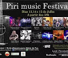
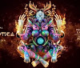

AGENDA CULTURAL
Confira os eventos que teremos aqui em Pirenópolis:
Nesta semana:
Seis - Quinze de julho
Festa em Louvor ao Divino Pai Eterno
Treze - Quinze de julho
Abertura do V Festival de Astronomia do Estado de Goias
Treze - Quinze de julho

Piri Music Festival
Treze - Quinze de julho
II Encontro Nacional Enteógenos
Próxima Semana:
Dezoito - Dezenove de julho
I Cãopaixão em Pirenópolis
Vinte de julho
BASS4BRAZIL
Vinte e Um de julho
AME Festival
Vinte e Um - Vinte e Dois de julho
Prática de Terapia Integrada
Eventos Futuros:
Julho
Vinte e Seis - Vinte e Nove de julho
Retiro de Yoga
Vinte e Seis - Vinte e Oito de julho

Festa em Louvor a Santissima Trindade dos Pireneus
Agosto
Dois - Quatro de agosto
Circuito Gastronômico Goiás
Três - Doze de agosto
Festa em Louvor ao Senhor Bom Jesus e Imaculada Conceição
Cinco de agosto
Trio in Uno
Oito - Dez de agosto
Curso Intensivo de Astrologia Védica - Módulo I
Setembro
Quatorze - Vinte e Três de setembro
Curso de Formação em Aerial Yoga
Vinte e Nove - Trinta de setembro
Curso de Reiki
Outubro
Vinte e Um - Vinte e Dois de outubro
Corridas de Montanha - Etapa Pirenópolis
Vinte e Um - Vinte e Dois de outubro

Hipnotica Festival a Sinergia
Vinte e Um - Vinte e Dois de outubro
Curso Intensivo de Astrologia Védica - Módulo II